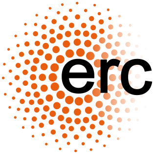

Funding and other support#
Development of MNE-Python has been supported by:
 National Institutes of Health:
R01-EB009048,
R01-EB006385,
R01-HD040712,
R01-NS044319,
R01-NS037462,
R01-NS104585,
P41-EB015896,
P41-RR014075
National Institutes of Health:
R01-EB009048,
R01-EB006385,
R01-HD040712,
R01-NS044319,
R01-NS037462,
R01-NS104585,
P41-EB015896,
P41-RR014075
 European Research Council:
YStG-263584,
YStG-676943
European Research Council:
YStG-263584,
YStG-676943 US Department of Energy: DE-FG02-99ER62764 (MIND)
US Department of Energy: DE-FG02-99ER62764 (MIND) Agence Nationale de la Recherche:
14-NEUC-0002-01,
IDEX Paris-Saclay
11-IDEX-0003-02
Agence Nationale de la Recherche:
14-NEUC-0002-01,
IDEX Paris-Saclay
11-IDEX-0003-02 Paris-Saclay Center for Data Science:
PARIS-SACLAY
Paris-Saclay Center for Data Science:
PARIS-SACLAYGoogle: Summer of code (×7 years)
 Amazon:
AWS Research Grants
Amazon:
AWS Research Grants
 US National Science Foundation:
US National Science Foundation:
 Chan Zuckerberg Initiative:
Chan Zuckerberg Initiative:
Institutional partners#
Additionally, many universities or research institutions have supported their employees’ contributions to MNE-Python as part of normal work duties. These institutions include: